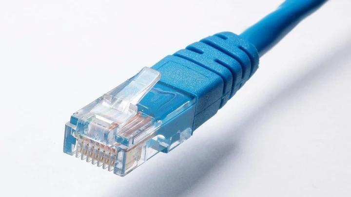
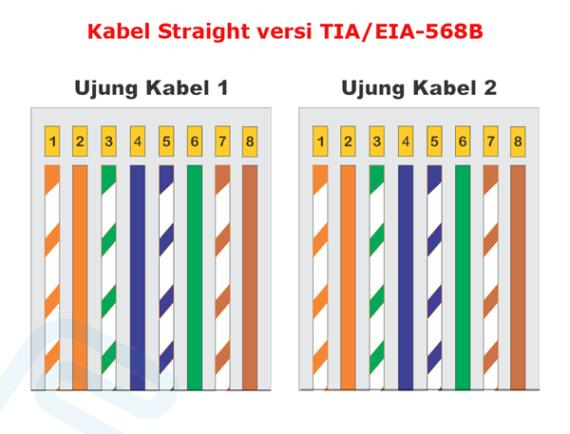
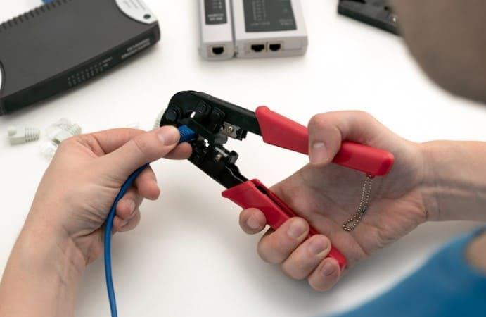
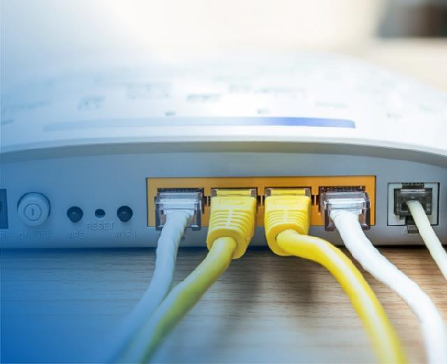
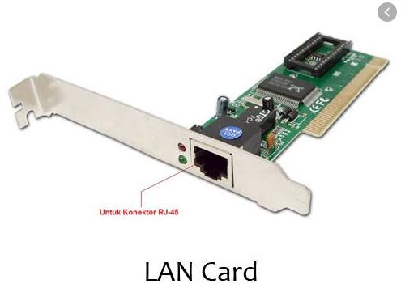
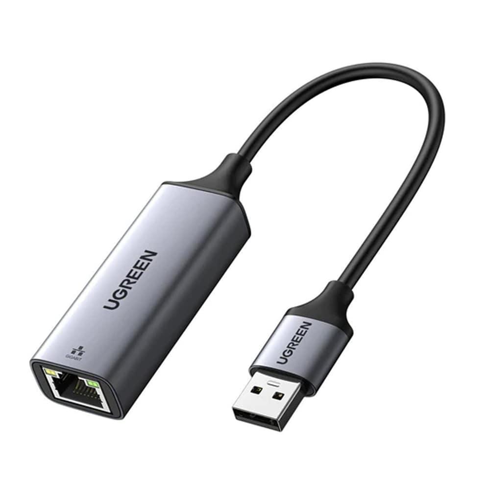
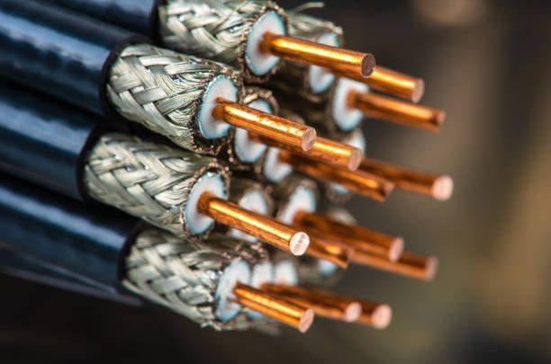
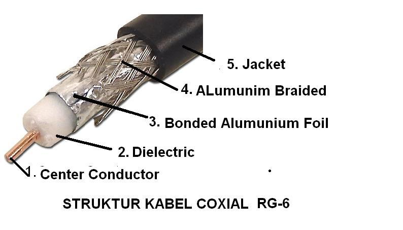
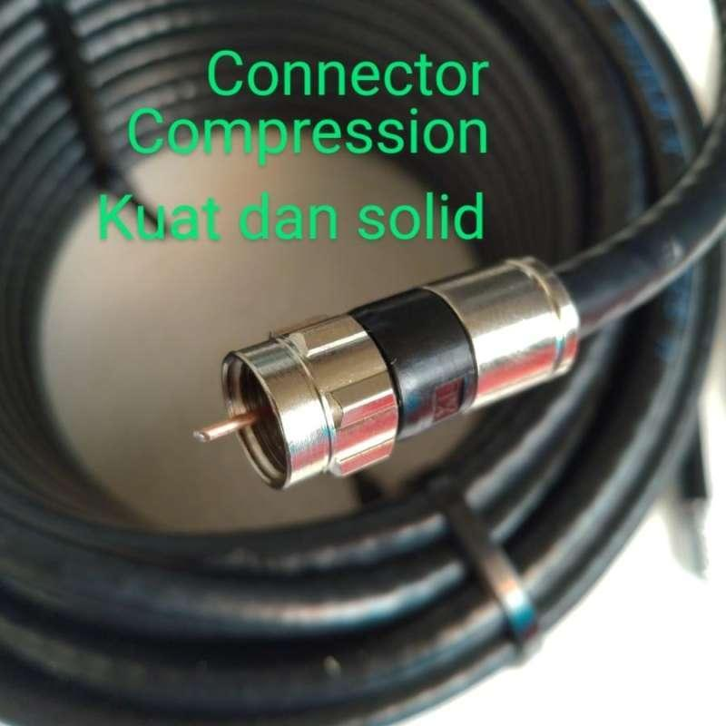
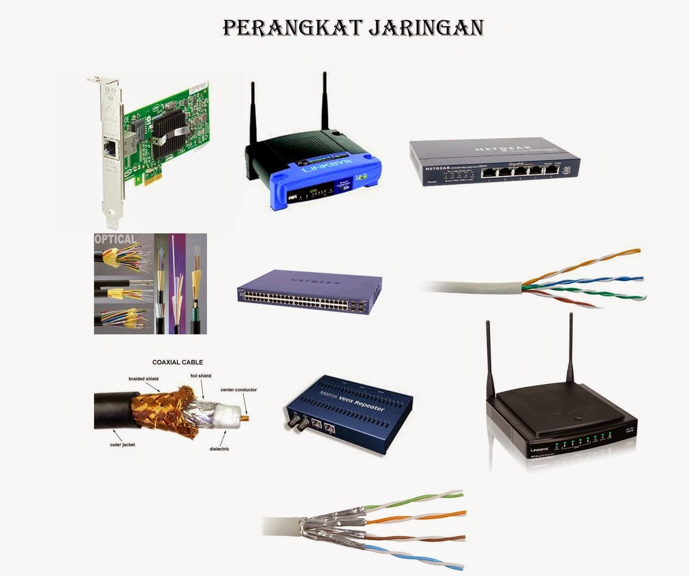

"Urat Nadi Dunia Digital"
🌍 Pendahuluan: Kita Tidak Pernah Benar-Benar “Offline”
Coba bayangkan satu hari tanpa internet. Tidak ada WhatsApp, YouTube, atau Google, bahkan tidak bisa login CBT sekolah. Apa yang sebenarnya menghubungkan semua itu?
Jawabannya bukan sekadar “internet”, tetapi jaringan. Dan di dalam jaringan itu, ada satu komponen vital: ⚡ KABEL JARINGAN. Tanpa kabel jaringan, data tidak akan bisa berpindah dengan stabil, cepat, dan aman.
🔌 1. APA ITU KABEL JARINGAN?
📖 Definisi Sederhana: Kabel jaringan adalah media fisik yang digunakan untuk menghubungkan perangkat komputer agar bisa saling bertukar data.
Contoh Penggunaan:
- Komputer ke komputer
- Komputer ke router
- Router ke internet
1. Kabel UTP (Unshielded Twisted Pair)
Ini adalah kabel yang paling sering kita temui di sekolah. Ciri-ciri: Warna biasanya biru, ujungnya pakai konektor RJ45, murah dan mudah dibuat sendiri.
✔ Kelebihan: Harga terjangkau, mudah dipasang, cocok untuk praktik siswa.
❌ Kekurangan: Jarak terbatas (±100 meter), mudah terganggu sinyal listrik.






2. Kabel Coaxial
Digunakan pada jaringan lama dan TV kabel:



